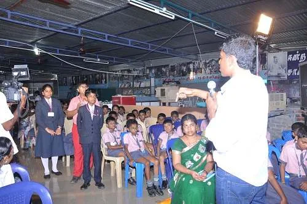
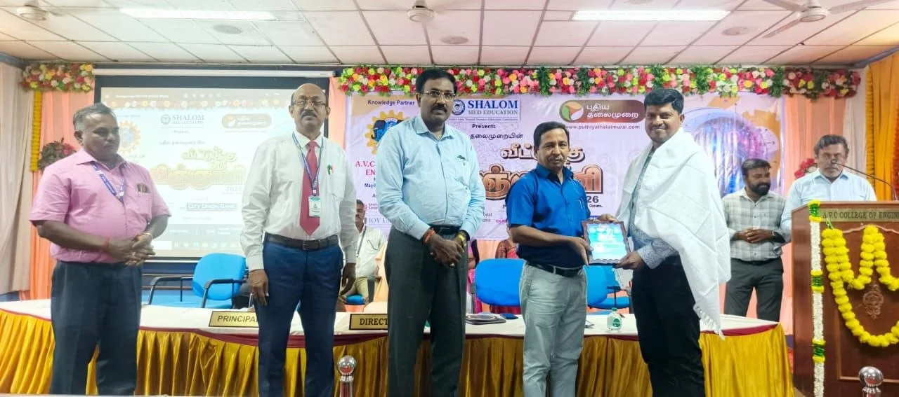

2012
2,00,000+
STEM


HI-TECH RESEARCH FOUNDATION
No. 1/5, Main Road,
Tharangambadi (Near Karaikal),
Mayiladuthurai District,
Tamil Nadu – 609 313,
South India.
No. 1/5, Main Road,
Tharangambadi (Near Karaikal),
Mayiladuthurai District,
Tamil Nadu – 609 313,
South India.